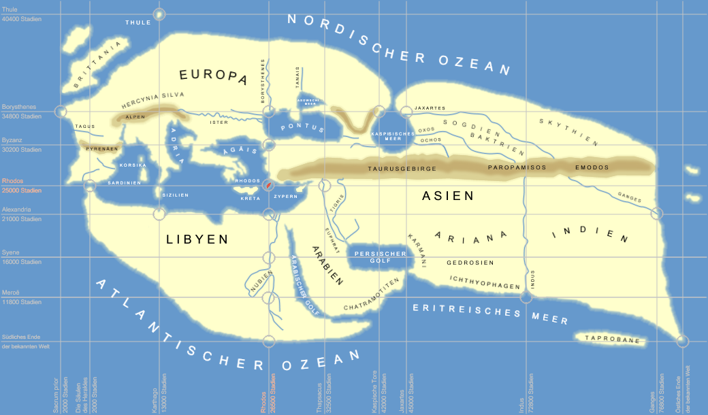
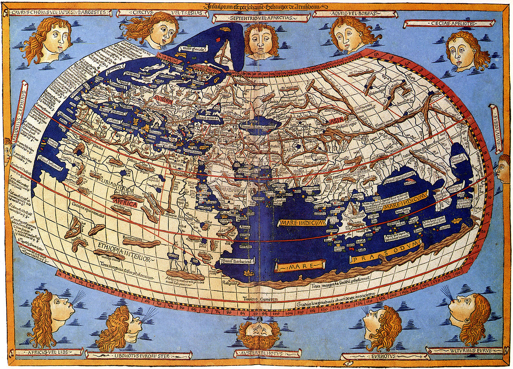

Карта ерастофена
«Батьком географії» заслужено називають Ератосфена. Він першим назвав науку про Землю «географією», обчислив коло Землі, визначив її розміри, виділив п ’ять зон – жарку, дві помірні й дві холодні – та описав їхні межі. Ератосфен склав карту світу, розширивши його межі від Греції до островів Цейлон та Ісландія.
Ератосфен був основоположником наукової, математичної і фізичної, географії. У його Географії (Geographika) в 3 книгах містився перший систематичний науковий виклад географії, історія географічних відкриттів, а також розглядався ряд фізичних і математичних проблем, зв'язаних з географією, включаючи вказівку на сферичну форму Землі й опис її поверхні. Він також висловив припущення, що якщо плисти від Гібралтару на захід, то можна доплисти до Індії. Ератосфен додав до свого твору географічну карту світу.
Карта плотемея
Карта Птолемея — карта світу і 26 більш докладних карт земної поверхні, що додавалися до трактату «Керівництво з географії» давньогрецького вченого Клавдія Птолемея. Трактат було написано близько 150 р. н. е. На картах перелічено близько 8000 міст і місцевостей із зазначенням їх географічних координат.
Оригінали карт втрачено, проте сам трактат було виявлено на межі XIII і XIV ст. До епохи Великих географічних відкриттів Птолемей служив для європейців основним джерелом географічних відомостей. На основі його описів картографам епохи Відродження вдалося реконструювати і втрачену карту світу
Сучасна інтерактивна карта
Карти світу також потребують знання навколишнього світу, для того щоб їх побудувати. Свідома карта світу не могла бути побудована до Європейського Відродження, оскільки це не менше половини світової берегової лінії, не кажучи вже про внутрішні райони, відомі для всіх культур. З тих пір по сьогодні продовжують накопичуватися знання про земну поверхню.
Мапи світу в основному фокусуються на політичних чи фізичних особливостях. Політичні карти відображають міжнародні кордони і людські поселення. Фізичні мапи показують географічні особливості, такі як гори, типи ґрунтів чи землеустрій. Геологічні карти показують не тільки поверхню, але й характеристики підстильної породи, скидові лінії і підземні структури. Фонова картограма використовує відтінок кольору та інтенсивність для відображення різниць між регіонами, таких як демографічна чи економічна статистика.